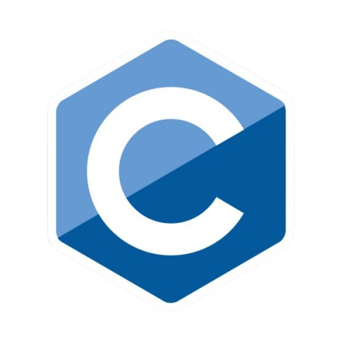
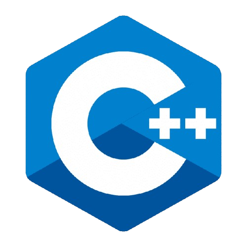
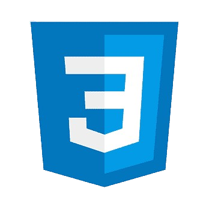
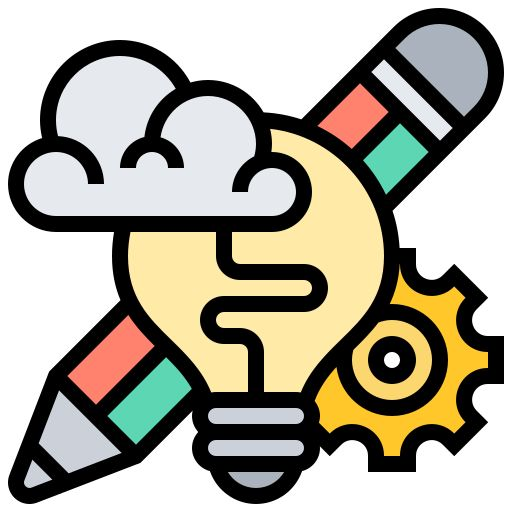
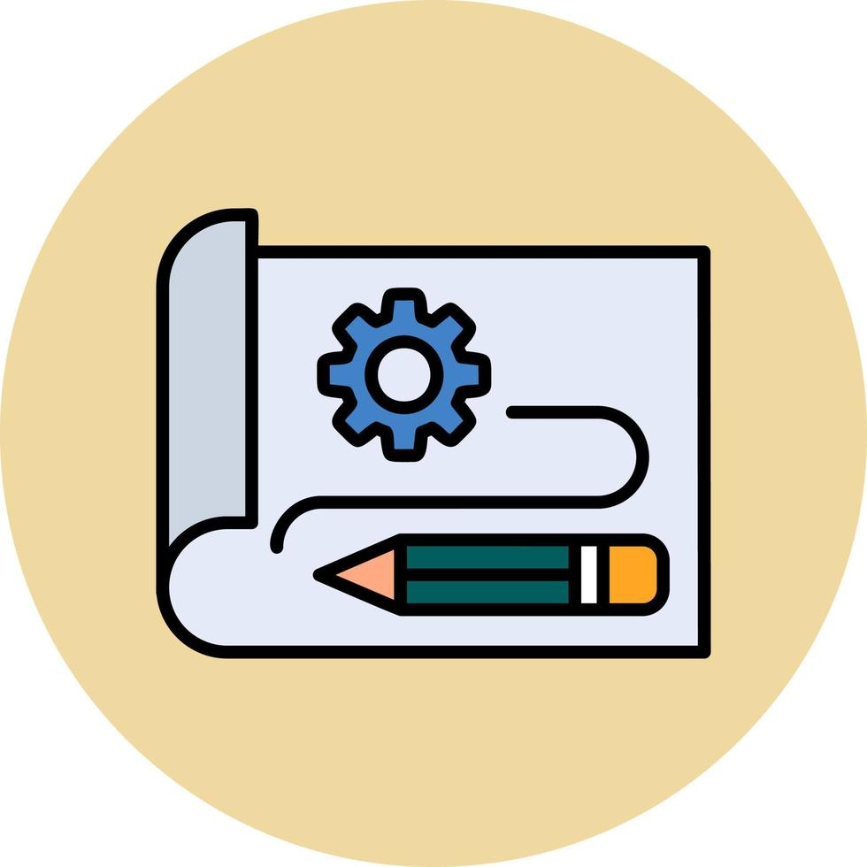
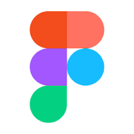
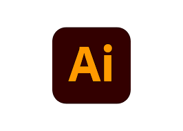

Programming Languages

C
C++ SQL
SQL JavaScript
JavaScript- HTML

CSS
Currently based in Prague, Czech Republic
My name is Diana Kolarova, I’m at the beginning of my journey in programming, building a strong foundation in C and C++ while studying at 42 Prague and an IT school since May 2025. I’m especially focused on developing my skills as a programmer, with the goal of specializing in mobile app development. I’m passionate about understanding how things work under the hood, improving my problem-solving abilities, and writing clean, efficient code.
At 42 Prague, I also contribute as a Tutor, helping other students navigate challenges and strengthen their learning. This experience not only reinforces my own knowledge but also helps me grow as a developer through collaboration on team projects.
With a background in UI/UX design, I aim to combine technical expertise with user-centered thinking to build intuitive, functional, and impactful applications. Right now, my main focus is growing as a developer and deepening my programming skills step by step.
My journey into tech began through UI/UX design, where I developed a strong interest in creating intuitive and meaningful user experiences. Over time, I became increasingly curious about the deeper side of how products are built especially in mobile app development. To explore this, I started with online courses and later joined 42 Prague in May 2025 to gain a more structured and in-depth understanding. At 42, I’ve been learning low-level programming in C and C++, along with core computer science concepts such as operating systems, memory management, and working in Unix environments. Along the way, I’ve also supported other students by sharing knowledge and helping them navigate challenges, which has strengthened both my technical skills and my ability to explain complex ideas clearly.

C
C++SQLJavaScript
CSS
Mobile App Thinking
Prototyping
Figma
Adobe Illustrator Adobe Photoshop
Adobe Photoshop Framer
Framer HTML & CSS
HTML & CSS